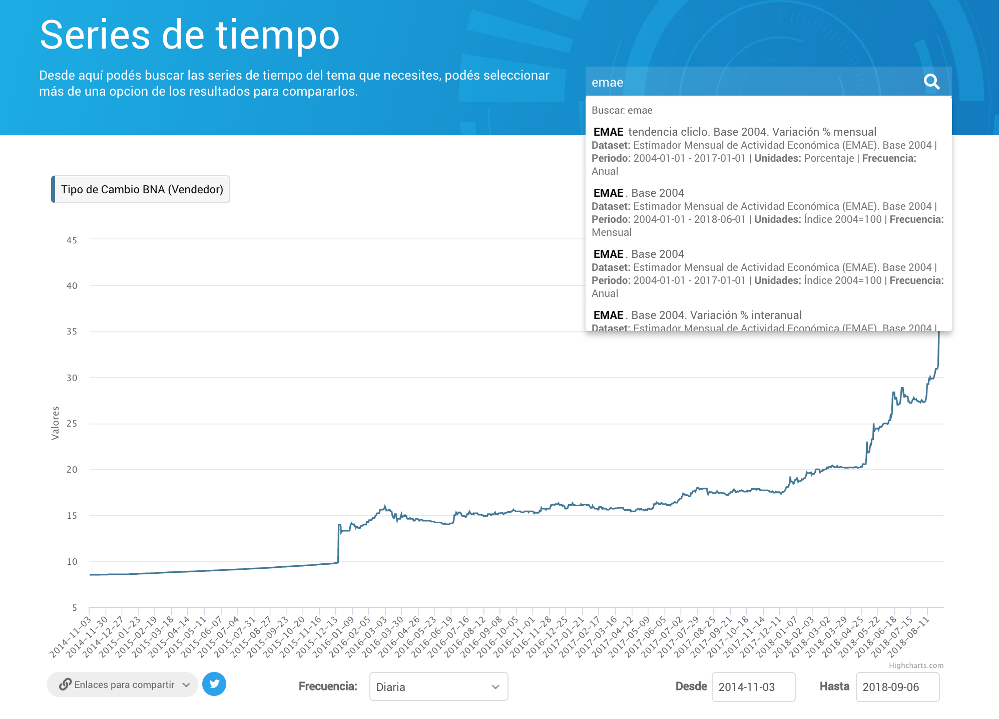

Versión : 1.21.2
La API de Series de Tiempo de Argentina, permite consultar indicadores con evolución cronológica publicados en formatos abiertos por organismos de la Administración Pública Nacional.
Una serie de tiempo es una secuencia de observaciones o valores (mínimo 2), medidos en determinados momentos del tiempo y ordenados cronológicamente.
| indice_tiempo | ipc_2016_nivel_general |
|---|---|
| 2017-04 | 0.28 |
| 2017-05 | 0.24 |
| 2017-06 | 0.22 |
| 2017-07 | 0.22 |
| 2017-08 | 0.23 |
| 2017-09 | 0.24 |
| 2017-10 | 0.23 |
| 2017-11 | 0.22 |
| 2017-12 | 0.25 |
| 2018-01 | 0.25 |
| 2018-02 | 0.26 |
| 2018-03 | 0.26 |
Un servicio web , es una tecnología que permite intercambiar datos entre aplicaciones.
apis.datos.gob.ar/series/api/series/?ids=101.1_I2NG_2016_M_22:percent_change_a_year_ago&format=csv
Estos indicadores son ejemplos de series de tiempo:
Si sos usuario de la API de Series de Tiempo y querés estar al tanto de los cambios y novedades, inscribite en la base de contactos de Datos Argentina y elegí sobre qué temas querés que te escribamos.
¿Tenés algo que contarnos? Nos encantaría que nos cuentes por Twitter o por mail qué mejoró usar la API en tu trabajo y qué le falta para mejorar aún más.
Para usar la API, tenés que buscar los ids de las series que te interesan.
En datos.gob.ar podés encontrar la base completa de series de tiempo , que contiene la lista de series disponibles en:
En el Explorador de Series de Tiempo podés buscar series, visualizarlas y compartir las URLs a la API o al explorador.

Los ids de las series deben pasarse al parámetro
ids
. Se pueden usar parámetros adicionales para
filtrar y transformar las series
.

Ver la referencia API para consultar la documentación completa de todos los parámetros disponibles.
En el generador de consultas podés ver todos los parámetros disponibles en la API para armar tu consulta.

Para realizar la consulta directamente en el navegador, o integrarla en una aplicación:
format=json
(valor default).
metadata=none
,
only
,
simple
o
full
.
Para descargar un archivo CSV:
format=csv
.
Tanto la consulta en CSV como en JSON se pueden integrar en planillas de cálculo .
Cualquier llamada a la API se puede visualizar en el explorador quitando el subdominio
apis
de la URL (y cambiando a HTTP):
Llamada a la API
Consulta en el explorador
El parámetro
ids
permite la consulta simultánea de hasta
40 series a la vez
, separadas por comas.
Los parámetros
start_date
y
end_date
permiten limitar una consulta a todos aquellos valores posteriores o anteriores (respectivamente) a una fecha determinada.
Tipo de cambio hasta Diciembre de 2016
https://apis.datos.gob.ar/series/api/series?ids=168.1_T_CAMBIOR_D_0_0_26&end_date=2016-12&format=csv
Por default, las series se muestran en la frecuencia más alta posible (esta es, la frecuencia más baja de todas las series consultadas a la vez). El parámetro
collapse
permite elegir una frecuencia más baja que esta.
Por default, cuando la API hace agregaciones temporales (ie. convertir una serie mensual en trimestral) hace un promedio de los valores de cada período .
Esta función de agregación se puede cambiar para toda la consulta con el parámetro
collapse_aggregation
, o para cada serie en particular (suma, máximo, mínimo, etc.).
Las series de pueden transformar en otras unidades (variación porcentual, variación interanual, etc.) en forma individual o conjunta, usando el parámetro
representation_mode
.
Nota: series con unidades de diferentes escalas, pueden ser difíciles de visualizar en un mismo gráfico.
Es posible aplicar a las series individuales tanto una transformación como una función de agregación particular a la vez .
En todos los casos, siempre se aplica primero la función de agregación y luego la transformación .
decimal
La API genera archivos CSV usando "." como separador decimal por defecto. Si tu cuenta de Google está configurada para Argentina / latinoamérica, podés agregar a todas tus llamadas a la API el argumento
&decimal=,
para que los CSVs se generen con "," como separador decimal.
Ver uso del parámetro
decimal
en la referencia.
Para que Google Spreadsheet lea correctamente el archivo CSV por defecto, puede elegirse “Estados Unidos” o cualquier otra región compatible como configuración regional.


La función IMPORTDATA() toma la URL de la consulta a la API y trae los datos a la planilla.


El índice de tiempo puede verse como un número la primera vez que se importan los datos. Lo más conveniente es seleccionar toda la columna y elegir el formato en el que se desea visualizar la fecha.


Una vez importada la tabla por primera vez, se pueden modificar los distintos parámetros de la consulta según lo que se necesite. La tabla se actualizará con cada cambio.


“Datos” > “Nueva consulta” > “Desde otras fuentes” > “Desde una web”
Nota:
si Excel está configurado para Argentina / latinoamérica agregar a la URL de la API
&decimal=,
para que los números decimales usen "," en lugar de "." y Excel los lea correctamente. Ver uso del parámetro
decimal
en la referencia.


Esto
sólo es necesario si se pide a la API usar las descripciones como nombres de las columnas
(
&header=descriptions
) en lugar del texto corto que viene por defecto, formado con carateres compatibles con cualquier codificación.
La API genera los archivos CSV con codificación “Unicode UTF-8”, que no es el valor por defecto de Excel y puede generar errores en los caracteres con tildes o la "ñ".
Click en la rueda de “Origen” > “Origen de archivo” > Elegir “Unicode UTF-8”


Excel puede no interpretar correctamente las fechas cuando Excel está configurado para Argentina / latinoamérica.
Si este es el caso, se debe utilizar el “Editor avanzado” para corregir el tipo de la columna "indice_tiempo" que debe ser “type date”.


Por último, haciendo click en “Cerrar y cargar” la consulta queda configurada en una tabla de Excel que se puede actualizar.

requests
Armar una función wrapper que facilite construir llamadas a la API.
import requests import urllib.parse def get_api_call(ids, **kwargs): API_BASE_URL = "https://apis.datos.gob.ar/series/api/" kwargs["ids"] = ",".join(ids) return "{}{}?{}".format(API_BASE_URL, "series", urllib.parse.urlencode(kwargs))
Una llamada válida a la API debe tener por lo menos un id de una serie válida, y luego puede tener parámetros opcionales.
api_call = get_api_call(["168.1_T_CAMBIOR_D_0_0_26"], start_date="2018-08") print(api_call) https://apis.datos.gob.ar/series/api/series?start_date=2018-08&ids=168.1_T_CAMBIOR_D_0_0_26
Obtener la respuesta en un diccionario.
result = requests.get(api_call).json() print(result) {'data': [['2018-08-01', 27.525], ['2018-08-02', 27.45], ['2018-08-03', 27.29], ['2018-08-04', 27.29], ['2018-08-05', 27.29], ['2018-08-06', 27.33], ['2018-08-07', 27.395], ['2018-08-08', 27.65], ['2018-08-09', 28.11], ['2018-08-10', 29.25], ['2018-08-11', 29.25], ['2018-08-12', 29.25], ['2018-08-13', 29.925], ['2018-08-14', 29.61], ['2018-08-15', 30.0], ['2018-08-16', 29.84]], 'meta': [{'end_date': '2018-08-16', 'frequency': 'day', 'start_date': '2018-08-01'}, {'catalog': {'title': 'Datos Programación Macroeconómica'}, 'dataset': {'description': 'Datos de tipo de cambio $-USD - futuro dólar . Con respecto al dólar de Estados Unidos. Frecuencia diaria.', 'issued': '2017-09-28', 'source': 'BCRA, MAE, Rofex y Bloomberg', 'title': 'Tipo de Cambio $-USD - Futuro Dólar'}, 'distribution': {'downloadURL': 'http://infra.datos.gob.ar/catalog/sspm/dataset/168/distribution/168.1/download/datos-tipo-cambio-usd-futuro-dolar-frecuencia-diaria.csv', 'title': 'Tipo de cambio $-USD - futuro dólar. Valores diarios'}, 'field': {'description': 'Tipo de Cambio BNA (Vendedor)', 'id': '168.1_T_CAMBIOR_D_0_0_26', 'units': 'Pesos argentinos por dólar'}}], 'params': {'identifiers': [{'dataset': '168', 'distribution': '168.1', 'id': '168.1_T_CAMBIOR_D_0_0_26'}], 'ids': '168.1_T_CAMBIOR_D_0_0_26', 'start_date': '2018-08'}}
pandas
Las llamadas a la API en CSV se pueden leer directamente a un
pandas.DataFrame
.
import pandas as pd df = pd.read_csv(get_api_call( ["168.1_T_CAMBIOR_D_0_0_26", "101.1_I2NG_2016_M_22", "116.3_TCRMA_0_M_36", "143.3_NO_PR_2004_A_21", "11.3_VMATC_2004_M_12"], format="csv", start_date=2018 ))
indice_tiempo tipo_cambio_bna_vendedor ipc_2016_nivel_general \
2018-01-01 19.023065 127.0147
2018-02-01 19.835179 130.2913
2018-03-01 20.229355 133.5028
2018-04-01 20.251100 136.9380
2018-05-01 23.600452 139.5800
2018-06-01 26.674333 145.0582
2018-07-01 27.607645 149.1178
tipo_cambio_real_multilateral_actual indice_serie_original construccion
96.628715 144.086686 158.920762
96.121512 138.470530 152.630381
93.062453 155.570021 158.931156
90.715862 152.432629 149.860484
104.302984 160.622476 154.011846
114.546258 NaN NaN
107.105698 NaN NaN
TSComponents
El objeto TSComponents fue desarrollado por el equipo de Datos Argentina para simplificar el uso de la API de Series de Tiempo en experiencias web.
Consiste de una librería JS y una hoja de estilos CSS versionadas en un CDN con distintos componentes diseñados para funcionar fácilmente con la API.
Ver más en la documentación de TSComponents .
card
El componente
card
permite embeber el último valor de un indicador en experiencias web para armar tableros o indicadores testigo. El objeto es altamente personalizable y tiene muchas variantes.
Estas tarjetas se generan a partir del siguiente código:
<!-- importa librería JS --> <script type='text/javascript' src='https://cdn.jsdelivr.net/gh/datosgobar/series-tiempo-ar-explorer@ts_components_2.0.0/dist/js/components.js'></script> <!-- importa hoja de estilos CSS --> <link rel="stylesheet" href="https://cdn.jsdelivr.net/gh/datosgobar/series-tiempo-ar-explorer@ts_components_2.0.0/dist/css/components.css" type="text/css"> <link type="text/css" rel="stylesheet" href="https://cdnjs.cloudflare.com/ajax/libs/font-awesome/5.8.2/css/all.min.css" media="all" /> <!-- estilo para ordenar las tarjetas en filas --> <style> .row { width: 90%; margin: auto; display: flex; justify-content: space-around; } </style> <!-- código HTML donde ubicar divs con cards, en rows --> <div class="row"> <div id="ipc"></div> <div id="exportaciones"></div> </div> <!-- JS que genera el gráfico en el div --> <script> window.onload = function() { TSComponents.Card.render('ipc', { serieId: '148.3_INIVELNAL_DICI_M_26:percent_change', color: '#F9A822', title: "Indice de Precios al Consumidor Nacional", links: "none" }) TSComponents.Card.render('exportaciones', { serieId: '74.3_IET_0_M_16:percent_change_a_year_ago', explicitSign: true, title: "Exportaciones", links: "none" }) } </script>
Ver
referencia completa del componente
card
.
graphic
El componente
graphic
permite embeber gráficos de líneas, áreas o barras en experiencias web. Permite elegir distintos elementos de filtro de fechas, personalizar los textos, etc.
Este gráfico se genera a partir del siguiente código:
<!-- importa librería JS --> <script type='text/javascript' src='https://cdn.jsdelivr.net/gh/datosgobar/series-tiempo-ar-explorer@ts_components_2.0.0/dist/js/components.js'></script> <!-- importa hoja de estilos CSS --> <link rel="stylesheet" href="https://cdn.jsdelivr.net/gh/datosgobar/series-tiempo-ar-explorer@ts_components_2.0.0/dist/css/components.css" type="text/css"> <!-- código HTML donde ubicar un div con un gráfico --> <div id="tmi"></div> <!-- JS que genera las tarjetas en sus divs --> <script> window.onload = function() { TSComponents.Graphic.render('tmi', { // Llamada a la API de Series de Tiempo graphicUrl: 'https://apis.datos.gob.ar/series/api/series/?ids=tmi_arg', title: 'Tasa de Mortalidad Infantil de Argentina', source: 'Dirección de Estadística e Información en Salud (DEIS). Secretaría de Gobierno de Salud' }) } </script>
Ver
referencia completa del componente
graphic
.
Se encuentran disponibles varios archivos con los mismos datos de la base de series de tiempo disponibles a través de la API.
Los datos están para descargar en cuatro formatos:
Existen varios paquetes de datos por cada formato:
Los
dumps
de la base de datos entera están disponibles bajo la siguiente ruta:
https://apis.datos.gob.ar/series/api/dump/:dump
Donde
:dump
puede ser uno de los siguientes archivos:
Formato CSV:
series-tiempo-csv.zip
series-tiempo-valores-csv.zip
series-tiempo-metadatos.csv
series-tiempo-fuentes.csv
Formato XLSX:
series-tiempo.xlsx
series-tiempo-valores.xlsx
series-tiempo-metadatos.xlsx
series-tiempo-fuentes.xlsx
Formato SQL:
La base de datos en SQL contiene a estos paquetes como tablas, todas en un único archivo.
series-tiempo-sqlite.zip
Formato DTA:
series-tiempo-valores-dta.zip
series-tiempo-metadatos.dta
series-tiempo-fuentes.dta
Notar que para el formato DTA no se disponibiliza la distribución con valores y metadatos desagregados.
Por ejemplo, la base de series de tiempo entera, junto con varios metadatos de las series, en formato XLSX, se encuentra disponible bajo
https://apis.datos.gob.ar/series/api/dump/series-tiempo.xlsx
A su vez, también existen versiones de los datos desagregados según el
catálogo
de origen. Se encuentran en la siguiente URL de descarga:
https://apis.datos.gob.ar/series/api/dump/:catalog/:dump
Los catálogos se pueden consultar bajo el siguiente
endpoint
de la API de búsqueda:
https://apis.datos.gob.ar/series/api/search/catalog_id/
Por ejemplo, para consultar las fuentes del catálogo
sspm
(de la Subsecretaría de Programación Macroeconómica del Ministerio de Hacienda de la Nación), en formato XLSX, se puede acceder en la siguiente URL:
https://apis.datos.gob.ar/series/api/dump/sspm/series-tiempo-fuentes.xlsx
Recurso:
/series
El recurso
/series
permite
obtener datos y metadatos
de una o más series, permitiendo hacer filtros por el índice de tiempo, cambios de granularidad en la dimensión temporal y cambios en la unidad de medida de los valores de la serie, entre otras operaciones.
ids
representation_mode
collapse
collapse_aggregation
limit
start
start_date
end_date
format
header
sort
metadata
decimal
sep
flatten
last
| Nombre | Requerido | Descripción | Default | Ejemplos |
|---|---|---|---|---|
| ids | Si |
Lista de caracteres alfanuméricos separados por comas.
Contiene la especificación de las series a consultar, junto a transformaciones y operaciones. |
N/A | ids=2.4_DGI_1993_T_19,134.2_B_0_0_6 |
| representation_mode |
ids
Lista separada por comas de los identificadores de las series a seleccionar para armar la respuesta. Los datos del resultado de la llamada tendrán una columna por cada serie seleccionada, en el mismo orden.
Este parámetro es requerido para la llamada . En caso de no suministrarse, se devolverá un error.
Cada identificador de serie podrá ser sufijado con:
representation_mode
).
collapse_aggregation
).
Cuando estos atributos se utilizan como parte del parámetro
ids
, se deben separar usando el caracter ":". El orden de los componentes no incide en el resultado de la operación.
Ejemplos:
ids=2.4_DGI_1993_T_19,134.2_B_0_0_6:change ids=2.4_DGI_1993_T_19,134.2_B_0_0_6:sum:change ids=2.4_DGI_1993_T_19,134.2_B_0_0_6:change:sum ids=2.4_DGI_1993_T_19:percent_change,134.2_B_0_0_6:sum:change ids=2.4_DGI_1993_T_19:end_of_period:percent_change,134.2_B_0_0_6:sum:change
representation_mode
Este parámetro indica el modo de representación de las series, y se aplica a todas aquellas que no tengan otro modo de representación distinto indicado en el parámetro
ids
en forma individual.
El modo de representación por defecto es el valor medido en la serie ( value ).
Los modos de representación disponibles son:
Las funciones de transformación disponibles en
representation_mode
también pueden especificarse para
series individuales
usando la notación
:percent_change
junto al id de la serie:
EMAE Construcción. Variación porcentual de valores mensuales, respecto del período anterior.
https://apis.datos.gob.ar/series/api/series/?limit=1000&ids=11.3_VMATC_2004_M_12:percent_change
El parámetro
representation_mode
seguirá afectando a todas las series para las cuales no se especifique individualmente una función de transformación.
collapse
El parámetro
collapse
modifica la frecuencia de muestreo de los datos de la serie o las series solicitadas. Debe usarse en combinación con
collapse_aggregation
para indicar una funnción de agregación temporal, cuando corresponda.
Las opciones disponibles son:
Si no se indica, se retornan los datos con la frecuencia original de la serie .
Si se solicitan múltiples series de distintas frecuencias , se utilizará la menor frecuencia de todas ellas (Ej.: si se solicitan a la vez una serie diaria, una mensual y una trimestral, se convertirán todas las series a la frecuencia trimestral).
Si la granularidad temporal solicitada en el valor de
collapse
es menor a la granularidad propia de alguna de las series solicitadas, la consulta devolverá un error.
El parámetro
collapse
afecta globalmente a todas las series seleccionadas por el parámetro
ids
en la llamada.
collapse_aggregation
El parámetro
collapse_aggregation
indica la función de agregación temporal que debe usarse para homogeneizar la frecuencia temporal de todas las series solicitadas (Ej.: qué operación realizar para convertir una serie mensual en anual).
Esta función de agregación actuará sobre:
collapse
collapse
, las series agrupadas de mayor granularidad temporal que la de la serie de menor frecuencia temporal.
Los valores disponibles para el parámetro son:
collapse_aggregation
.
Las funciones de agregación temporal disponibles en
collapse_aggregation
también pueden especificarse para
series individuales
usando la notación
:sum
junto al id de la serie:
El parámetro
collapse_aggregation
seguirá afectando a todas las series para las cuales no se especifique individualmente una función de agregación temporal.
limit
Este parámetro es utilizado junto a
start
para controlar el paginado de los resultados devueltos por la API. Debe especificarse un número entero positivo, no mayor que 1000, ya que esa es la cantidad máxima de resultados devueltos por la API. El valor por defecto si no se especifica valor alguno es 100.
start
Este parámetro es utilizado junto a
limit
para controlar el paginado de los resultados devueltos por la API. Debe especificarse un número entero positivo o 0. El valor por defecto si no se especifica valor alguno es 0.
El
start
indica el "número de períodos después de
start_date
" (o el "número de períodos antes de
end_date
", dependiendo del ordenamiento
asc
o
desc
del parámetro
sort
) que se saltean desde el comienzo o el final de la serie antes de empezar a devolver valores.
start_date
El parámetro
start_date
indica la fecha menor a partir de la cual se comenzarán a recolectar datos para la respuesta. Los valores cuyo índice de tiempo coincida con el valor de
start_date
se incluirán en el resultado retornado. Se utilizará como filtro sobre el índice de tiempo de las series de datos.
end_date
El parámetro
end_date
indica la fecha mayor hasta la cual se recolectarán datos para la respuesta. Los valores cuyo índice de tiempo coincida con el valor de
end_date
se incluirán en el resultado retornado. Se utilizará como filtro sobre el índice de tiempo de las series de datos.
format
Especifica el formato de la respuesta, siendo json el valor por defecto.
Las opciones disponibles son:
header
Especifica los atributos de las series a utilizar como headers (cabeceras) de las columnas del archivo CSV generado. Por defecto usa titles , que son los títulos de las series.
Las opciones disponibles son:
ids
.
sort
Especifica el orden temporal de los resultados devueltos, siendo asc el valor por defecto.
Las opciones disponibles son:
metadata
Especifica el nivel de detalle de metadatos requerido por el usuario, siendo
simple
el valor por defecto. Sólo aplica cuando
format=json
.
Las opciones disponibles son:
decimal
Especifica el caracter utilizado para los números decimales, siendo
.
el valor por defecto. Sólo aplica cuando
format=csv
.
Las opciones disponibles son:
sep
Especifica el caracter separador de valores, siendo
,
el valor por defecto. Sólo aplica cuando
format=csv
.
Se puede utilizar cualquier caracter UTF-8, si bien se recomienda preservar el uso de la coma en la mayoría de los casos.
flatten
Especifica si la respuesta de los metadatos de las series pedidas deberían devolverse en una jerarquía plana .
Cuando el parámetro no es incluido, la respuesta tiene la siguiente estructura:
{
"catalog": [<catalog_meta>],
"dataset": [<dataset_meta>],
"distribution": [<distribution_meta>],
"field": [<field_meta>],
}
Una consulta con parámetro
flatten
incluido tendrá la siguiente respuesta de metadatos:
{
catalog_meta1: ...,
catalog_meta2: ...,
dataset_meta1: ...,
<nivel>_<meta_key>: <meta_value>
...
}
last
Modifica el pedido para devolver los últimos N valores de la(s) serie(s), en orden de fechas ascendiente. Mutuamente exclusivo con
sort
,
start
, y
limit
.
Un pedido con
last=N
es equivalente a invertir el orden de un pedido con
sort=desc
,
limit=N
.
Recurso:
/search
El recurso
/search
permite buscar series a partir de un texto, proporcionando además algunos filtros (ej.: por tema o por unidades de las series).
| Nombre | Requerido | Descripción | Default | Ejemplos |
|---|---|---|---|---|
| q | No | Texto | N/A | q=ipc |
| dataset_theme |
q
Texto de entrada a buscar en la base de series de tiempo. Puede ser abritrariamente largo, pero se recomienda ingresar una o más palabras clave.
dataset_theme
,
units
,
dataset_publisher_name
,
dataset_source
,
catalog_id
Estos parámetros pueden ser usados como filtros en los resultados de la búsqueda . Al aplicarse, se muestran únicamente aquellos resultados que sean compatibles con la especificación.
Por ejemplo: un pedido con
units=Millones de pesos
sólo contendrá series de tiempo que estén expresadas en millones de pesos.
Los términos que aceptan estos parámetros son especificados en recursos auxiliares que devuelven la lista entera de valores aceptados en los filtros.
Por ejemplo: un pedido a
/search/field_units
devuelve una lista de los términos que se le pueden pasar al parámetro
units
. Cualquier otra opción devolverá una lista vacía de resultados (al no haber coincidencias). Consultar la tabla de parámetros para ver los endpoints auxiliares.
Se pueden armar consultas que filtren por más de un valor, separando los valores deseados por
||
. Por ejemplo:
units=Pesos||Millones de pesos
.
limit
Este parámetro es utilizado junto a
start
para controlar el paginado de los resultados devueltos por la API. Debe especificarse un número entero positivo, no mayor que 1000, ya que esa es la cantidad máxima de resultados devueltos por la API. El valor por defecto si no se especifica valor alguno es 10.
start
Este parámetro es utilizado junto a
limit
para controlar el paginado de los resultados devueltos por la API. Debe especificarse un número entero positivo o 0. El valor por defecto si no se especifica valor alguno es 0.
El
start
indica el "número de resultados después del inicio" que se saltea el buscador para el armado de la respuesta.
aggregations
La presencia de este parámetro agrega un objeto nuevo a la respuesta de la API bajo la clave
aggregations
, que contiene la cantidad de ocurrencias totales de la búsqueda discriminando por los distintos filtros posibles. Si el parámetro no está presente, no se calculan las agregaciones.
Un ejemplo posible de la respuesta:
{ "aggregations": { "dataset_theme": [ { "label": "Finanzas Públicas", "series_count": 904 }, { "label": "Precios", "series_count": 522 }, { "label": "Sector Externo", "series_count": 21 } ], "units": [ { "label": "Millones de pesos", "series_count": 904 }, { "label": "Índice", "series_count": 509 }, { "label": "Millones de dólares", "series_count": 21 }, { "label": "Variación Porcentual", "series_count": 12 }, { "label": "Variación intermensual", "series_count": 1 } ], "dataset_publisher_name": [ { "label": "Subsecretaría de Programación Macroeconómica.", "series_count": 1447 } ], "dataset_source": [ { "label": "Ministerio de Hacienda", "series_count": 925 }, { "label": "Instituto Nacional de Estadística y Censos (INDEC)", "series_count": 522 } ], "catalog_id": [ { "label": "sspm", "series_count": 1447 } ] } }
Se encuentran disponibles varios archivos con los mismos datos de la base de series de tiempo disponibles a través de la API.
Los datos están para descargar en cuatro formatos:
Existen varios paquetes de datos por cada formato:
Los
dumps
de la base de datos entera están disponibles bajo la siguiente ruta:
https://apis.datos.gob.ar/series/api/dump/:dump
Donde
:dump
puede ser uno de los siguientes archivos:
Formato CSV:
series-tiempo-csv.zip
series-tiempo-valores-csv.zip
series-tiempo-metadatos.csv
series-tiempo-fuentes.csv
Formato XLSX:
series-tiempo.xlsx
series-tiempo-valores.xlsx
series-tiempo-metadatos.xlsx
series-tiempo-fuentes.xlsx
Formato SQL:
La base de datos en SQL contiene a estos paquetes como tablas, todas en un único archivo.
series-tiempo-sqlite.zip
Formato DTA:
series-tiempo-valores-dta.zip
series-tiempo-metadatos.dta
series-tiempo-fuentes.dta
Notar que para el formato DTA no se disponibiliza la distribución con valores y metadatos desagregados.
Por ejemplo, la base de series de tiempo entera, junto con varios metadatos de las series, en formato XLSX, se encuentra disponible bajo
https://apis.datos.gob.ar/series/api/dump/series-tiempo.xlsx
A su vez, también existen versiones de los datos desagregados según el
catálogo
de origen. Se encuentran en la siguiente URL de descarga:
https://apis.datos.gob.ar/series/api/dump/:catalog/:dump
Los catálogos se pueden consultar bajo el siguiente
endpoint
de la API de búsqueda:
https://apis.datos.gob.ar/series/api/search/catalog_id/
Por ejemplo, para consultar las fuentes del catálogo
sspm
(de la Subsecretaría de Programación Macroeconómica del Ministerio de Hacienda de la Nación), en formato XLSX, se puede acceder en la siguiente URL:
https://apis.datos.gob.ar/series/api/dump/sspm/series-tiempo-fuentes.xlsx
Recurso:
/validate
El recurso
/validate
permite validar distribuciones de series de tiempo para determinar si están listas a ser cargadas en el servicio. Es una herramienta de utilidad para publicadores, es una manera de asegurarse que los datos están en el formato esperado por la API.
Se utiliza a través de una llamada de tipo POST (por ejemplo con
curl
):
curl POST $API_URL/series/api/validate -H 'Content-Type: application/json' -d ' { "catalog_url": "http://infra.datos.gob.ar/catalog/sspm/data.json", "distribution_id": "192.1" }'
Respuesta ejemplo:
{ "catalog_url": "http://infra.datos.gob.ar/catalog/sspm/data.json", "distribution_id": "192.1", "found_issues": 2, "detail": [ "Datos inconsistentes en la distribución 192.1: Comienzo '1881-01-01 00:00:00' / Fin '2009-01-01 00:00:00' / Frecuencia 'R/P3M' / Fechas '513' / Valores '129'", "Campo subtotal_agricola_60 faltante en la distribución 192.1" ] }
Acepta dos parámetros, ambos obligatorios:
catalog_url
: URL del catálogo en donde se encuentra la distribución a validar
distribution_id
:
identifier
de la distribución a validar.
Ante cualquier error de parámetros faltantes o inválidos, devuelve una respuesta con código 400.
Los datos de la API de Series de Tiempo bajo las licencias aplicadas por sus publicadores, que pueden ser consultadas en la
tabla de metadatos de las series
o en el objeto
meta
devuelto en una consulta a la API con parámetro
metadata=full
.
{ "catalog": { "publisher": { "mbox": "datoseconomicos@mecon.gov.ar", "name": "Subsecretaría de Programación Macroeconómica." }, "license": "Creative Commons Attribution 4.0", "description": "Catálogo de datos abiertos de la Subsecretaría de Programación Macroeconómica.", "language": Array[1][ "SPA" ], "superThemeTaxonomy": "http://datos.gob.ar/superThemeTaxonomy.json", "issued": "2017-09-28", "rights": "2017-09-28", "modified": "2017-09-28", "spatial": "ARG", "title": "Datos Programación Macroeconómica", "identifier": "sspm" }, "dataset": { "publisher": { "mbox": "datoseconomicos@mecon.gov.ar", "name": "Subsecretaría de Programación Macroeconómica." }, "landingPage": "https://www.minhacienda.gob.ar/secretarias/politica-economica/programacion-macroeconomica/", "keyword": Array[2][ "Información Económica al Día", "Precios" ], "superTheme": Array[1][ "ECON" ], "title": "Índice de Precios al Consumidor. Por categorías. Base diciembre 2016.", "language": Array[1][ "SPA" ], "issued": "2017-09-28", "temporal": "2016-04-01/2017-06-01", "source": "Instituto Nacional de Estadística y Censos (INDEC)", "theme": Array[1][ { "label": "Precios", "id": "precios", "description": "Series de precios" } ], "accrualPeriodicity": "R/P1M", "spatial": "ARG", "identifier": "103", "license": "Creative Commons Attribution 4.0", "contactPoint": { "fn": "Subsecretaría de Programación Macroeconómica." }, "accessLevel": "ABIERTO", "description": "Índice de Precios al Consumidor. Apertura por categorías. Base diciembre 2016." }, "distribution": { "accessURL": "https://www.minhacienda.gob.ar/secretarias/politica-economica/programacion-macroeconomica/", "description": "Índice de Precios al Consumidor. Categorías. Valores mensuales. (Base diciembre 2016).", "format": "CSV", "dataset_identifier": "103", "issued": "2017-09-28", "title": "Índice de Precios al Consumidor, por categorías. Base diciembre 2016. Valores mensuales", "fileName": "indice-precios-al-consumidor-categorias-base-diciembre-2016-mensual.csv", "downloadURL": "http://infra.datos.gob.ar/catalog/sspm/dataset/103/distribution/103.1/download/indice-precios-al-consumidor-categorias-base-diciembre-2016-mensual.csv", "identifier": "103.1", "scrapingFileURL": "https://www.economia.gob.ar/download/infoeco/apendice4.xlsx", "frequency": "R/P1M", "last_hash": "355c9dd579208476c6520e8cb05c350dbfcb6b5d5b5743f30db0f8222a0cd6db38048b73ea465102c6c5d2dfa66970eb6857f4ed63cafaaf07fbde193e82979e", "changed": "False" }, "field": { "distribution_identifier": "103.1", "description": "IPC Núcleo. Base abr 2016. Mensual", "title": "ipc_2016_nucleo", "dataset_identifier": "103", "specialTypeDetail": "", "units": "Índice Dic-2016=100", "type": "number", "id": "103.1_I2N_2016_M_15", "available": "true", "last_value": "149.8703", "second_to_last_value": "145.2069", "last_pct_change": "0.03211555373746", "time_index_end": "2018-08-01", "frequency": "R/P1M", "time_index_size": "29", "days_without_data": "14", "time_index_start": "2016-04-01" } } ]
La API de series de tiempo se encuentra en estado beta de desarrollo y las cuotas de uso pueden cambiar significativamente en el futuro, dependiendo de la evolución del desarrollo y uso del servicio.
Actualmente se aplican las siguientes cuotas de uso por IP:
Lista de proyectos y aplicaciones que utilizan, extienden o documentan la API de Series de Tiempo.
¿Desarrollaste una librería o tenés un proyecto que usa la API? Te invitamos a contarnos así la agregamos a esta lista.
Para todo lo demás, podés mandarnos tu comentario o consulta a datos@modernizacion.gob.ar .
Para publicar series en la API de Series de Tiempo, tenés que:
El punto 2 de esta sección te explica cómo documentar una distribución de series de tiempo armando un catálogo de datos abiertos en Excel . Si tenés un Portal Andino, lee cómo documentar series de tiempo en un Portal Andino .
Una distribución de series de tiempo es un archivo CSV donde la primer columna contiene las fechas y cada una de las otras columnas es una serie de tiempo.
Así se ve una tabla de series de tiempo en una planilla de cálculo como Excel, Libre Office o Google Spreadsheet:
| indice_tiempo | oferta_global_pib | oferta_global_importacion | demanda_global_exportacion | demanda_global_ibif | demanda_global_consumo_priv |
|---|---|---|---|---|---|
| 1993-01-01 | 236520.0336 | 22027.59999 | 16340.95975 | 45069.41348 | 31952.717 |
| 1994-01-01 | 250307.886 | 26682.25975 | 18840.403 | 51231.4255 | 32094.804 |
| 1995-01-01 | 243186.1018 | 24065.62925 | 23084.79625 | 44528.27725 | 32338.89925 |
| 1996-01-01 | 256626.244 | 28284.11475 | 24850.043 | 48483.8615 | 33040.55475 |
| 1997-01-01 | 277441.3173 | 35884.496 | 27876.14225 | 57047.5 | 34104.32325 |
| 1998-01-01 | 288123.3068 | 38903.79175 | 30837.53425 | 60780.6695 | 35249.1645 |
| 1999-01-01 | 278369.0138 | 34520.59125 | 30448.89575 | 53116.3155 | 36173.34075 |
La tabla puede ser generada con un software de planilla de cálculo, una rutina programada o incluso a mano con un editor de texto! Pero en cualquier caso tenés que guardarla como un archivo CSV:
indice_tiempo,oferta_global_pib,oferta_global_importacion,demanda_global_exportacion,demanda_global_ibif,demanda_global_consumo_priv 1993-01-01,236520.033577,22027.5999938,16340.9597519,45069.4134803,31952.717001 1994-01-01,250307.886,26682.25975,18840.403,51231.4255,32094.804 1995-01-01,243186.10175,24065.62925,23084.79625,44528.27725,32338.89925 1996-01-01,256626.244,28284.11475,24850.043,48483.8615,33040.55475 1997-01-01,277441.31725,35884.496,27876.14225,57047.5,34104.32325 1998-01-01,288123.30675,38903.79175,30837.53425,60780.6695,35249.1645 1999-01-01,278369.01375,34520.59125,30448.89575,53116.3155,36173.34075
Es muy importante que el archivo CSV cumpla con estas condiciones:
YYYY-MM-DD
El índice de tiempo debe tener las fechas en formato
YYYY-MM-DD
. Este es el estándar ISO 8601.
Por ejemplo: 12/03/2001 no está soportado, debe escribirse 2001-03-12.
Fechas estandarizadas en planillas de cálculo
Las planillas de cálculo suelen leer de distintas maneras las fechas y a veces es difícil controlar en qué formato se guardan cuando "exportás a CSV" o "guardás como CSV".
El mejor consejo:
El indice de tiempo debe comenzar por la fecha más antigua y terminar por la más reciente. Menor a mayor, orden ascendente.
| indice_tiempo_correcto | indice_tiempo_incorrecto |
|---|---|
| 1993-01-01 | 1999-01-01 |
| 1994-01-01 | 1998-01-01 |
| 1995-01-01 | 1997-01-01 |
| 1996-01-01 | 1996-01-01 |
| 1997-01-01 | 1995-01-01 |
Al índice de tiempo no le pueden faltar valores intermedios. Si no hay datos de una serie para determinado período, debe estar la celda en blanco.
| indice_tiempo_correcto | indice_tiempo_incorrecto |
|---|---|
| 1993-01-01 | 1993-01-01 |
| 1994-01-01 | 1994-01-01 |
| 1995-01-01 | 1997-01-01 |
| 1996-01-01 | 1998-01-01 |
| 1997-01-01 | 1999-01-01 |
Para representar períodos más largos que una fecha (el caso de todas las frecuencias de tiempo más bajas que la diaria) debe usarse siempre la fecha completa del comienzo del período .
Mensual
| indice_tiempo_correcto | indice_tiempo_incorrecto |
|---|---|
| 1980-01-01 | 1980-01-31 |
| 1980-02-01 | 1980-02-28 |
| 1980-03-01 | 1980-03-31 |
Trimestral
| indice_tiempo_correcto | indice_tiempo_incorrecto |
|---|---|
| 1980-01-01 | 1980-02-01 |
| 1980-04-01 | 1980-05-01 |
| 1980-07-01 | 1980-08-01 |
| 1980-10-01 | 1980-11-01 |
Semestral
| indice_tiempo_correcto | indice_tiempo_incorrecto | indice_tiempo_incorrecto |
|---|---|---|
| 1980-01-01 | 1980-01-01 | 1980-01-31 |
| 1980-07-01 | 1980-08-01 | 1980-07-31 |
| 1981-01-01 | 1981-01-01 | 1981-01-31 |
Las columnas del CSV deben estar separadas con ",". No con ";", "|" ni ningún otro caracter.
Correcto
indice_tiempo,oferta_global_pib,oferta_global_importacion,demanda_global_exportacion,demanda_global_ibif,demanda_global_consumo_priv 1993-01-01,236520.033577,22027.5999938,16340.9597519,45069.4134803,31952.717001 1994-01-01,250307.886,26682.25975,18840.403,51231.4255,32094.804 1995-01-01,243186.10175,24065.62925,23084.79625,44528.27725,32338.89925
Incorrecto
indice_tiempo;oferta_global_pib;oferta_global_importacion;demanda_global_exportacion;demanda_global_ibif;demanda_global_consumo_priv 1993-01-01;236520.033577;22027.5999938;16340.9597519;45069.4134803;31952.717001 1994-01-01;250307.886;26682.25975;18840.403;51231.4255;32094.804 1995-01-01;243186.10175;24065.62925;23084.79625;44528.27725;32338.89925
Los números decimales deben usar "." como separador decimal. No usar ",".
Correcto
indice_tiempo,oferta_global_pib,oferta_global_importacion,demanda_global_exportacion,demanda_global_ibif,demanda_global_consumo_priv 1993-01-01,236520.033577,22027.5999938,16340.9597519,45069.4134803,31952.717001 1994-01-01,250307.886,26682.25975,18840.403,51231.4255,32094.804 1995-01-01,243186.10175,24065.62925,23084.79625,44528.27725,32338.89925
Incorrecto
indice_tiempo,oferta_global_pib,oferta_global_importacion,demanda_global_exportacion,demanda_global_ibif,demanda_global_consumo_priv 1993-01-01,"236520,033577","22027,5999938","16340,9597519","45069,4134803","31952,717001" 1994-01-01,"250307,886","26682,25975","18840,403","51231,4255","32094,804" 1995-01-01,"243186,10175","24065,62925","23084,79625","44528,27725","32338,89925"
Los números decimales no deben usar separador de miles.
Correcto
indice_tiempo,oferta_global_pib,oferta_global_importacion,demanda_global_exportacion,demanda_global_ibif,demanda_global_consumo_priv 1993-01-01,236520.033577,22027.5999938,16340.9597519,45069.4134803,31952.717001 1994-01-01,250307.886,26682.25975,18840.403,51231.4255,32094.804 1995-01-01,243186.10175,24065.62925,23084.79625,44528.27725,32338.89925
Incorrecto
indice_tiempo,oferta_global_pib,oferta_global_importacion,demanda_global_exportacion,demanda_global_ibif,demanda_global_consumo_priv 1993-01-01,"236,520.033577","22,027.5999938","16,340.9597519","45,069.4134803","31,952.717001" 1994-01-01,"250,307.886","26,682.25975","18,840.403","51,231.4255","32,094.804" 1995-01-01,"243,186.10175","24,065.62925","23,084.79625","44,528.27725","32,338.89925"
Separador de miles al exportar planilla de cálculo a CSV
Algunas planillas de cálculo (como Excel en algunas versiones) exportan a CSV agregando el separador de miles si el usuario eligió un formato de visualización de número que lo incluye. Para evitarlo, seleccionar las columnas que contienen las series y elegir un formato de visualización de número sin separador de miles .
Una vez que creaste el CSV, es hora de subirlo a alguna URL pública y documentarlo en el Excel.
Si no creaste el Dataset que contendrá el nuevo recurso/distribución de series de tiempo, tenés que crear un nuevo Dataset. Si el Dataset ya existe, sólo tenés que agregar un nuevo recurso.

Documentar un recurso de series de tiempo es igual que documentar cualquier otro recurso, hasta que llegues a la hoja
field
.
Una vez que llegás a la hoja
field
tenés que documentar la primer columna del CSV: el
índice de tiempo
.

R/P1Y
: anual
R/P6M
: semestral
R/P3M
: trimestral
R/P1M
: mensual
R/P1D
: diario
El resto de las columnas a documentar son las series de tiempo.

Una vez que documentaste un nuevo recurso de series de tiempo, escribinos a datos@modernizacion.gob.ar para que lo federemos en la API y te ayudemos a resolver cualquier problema!
A partir de que se federa por primera vez, la API revisará automáticamente 4 veces por día el archivo CSV y los metadatos para reflejar cualquier cambio que hagas.
Los identificadores de las series son códigos únicos en la Administración Pública Nacional que identifican a una serie individual. Se usan en la API para solicitar los datos de una serie.
Identificadores de series
https://apis.datos.gob.ar/series/api/series/?ids= tmi_arg https://apis.datos.gob.ar/series/api/series/?ids= AGRO_0001 https://apis.datos.gob.ar/series/api/series/?ids= tcrse_IBMDNk https://apis.datos.gob.ar/series/api/series/?ids= defensa_FAA_0006 https://apis.datos.gob.ar/series/api/series/?ids= 148.3_INIVELNAL_DICI_M_26
Cuando un organismo comienza a publicar series de tiempo, es muy importante diseñar o elegir una convención o sistema de nomenclatura para generar los identificadores de las series del organismo, que cumpla con las siguientes propiedades:
Un identificador puede estar compuesto por:
Numera las series en orden a medida que se van publicando por primera vez, empieza en el número 1 y se incrementa sucesivamente con cada serie nueva.
Debe agregarse un prefijo con el identificador del catálogo (o similar) para evitar la duplicidad de códigos con otro organismo. Conviene comenzar en 0001 en lugar de 1 para que el largo del identificador sea el mismo (o al menos hasta que se superen las 10 mil series publicadas).
También se puede combinar con algún código, generando una clasificación intermedia.
Elige una cadena de texto aleatoria de X cantidad de dígitos para cada serie nueva.
Se puede usar un generador aleatorio de textos usando 8 dígitos, números, letras minúsculas y letras mayúsculas. Se recomienda excluir caracteres especiales para facilitar la legibilidad del identificador y, si bien 8 dígitos suelen garantizar que no habrá duplicidad, debe chequearse que el id no exista ya en la base.
También se puede combinar con el identificador de catálogo o un código diferente como prefijo, y usar menos caracteres aleatorios (6 o 4).
Codifica características de las series según un criterio predefinido y/o utiliza siglas o acrónimos para abreviar su nombre.
Este sistema suele buscar aumentar la legibilidad del identificador, para el usuario avanzado que puede entender el sistema de nomenclatura utilizado y ahorrar tiempo en la búsqueda de series del mismo dataset o temática.
Debe tenerse especial cuidado en no generar identificadores fácilmente duplicables en el contexto de la Administración Pública Nacional o que puedan prestar a confusión con otras series diferentes.
En caso de optar por este sistema, algunas características o dimensiones de apertura de los valores de las series deben codificarse según los siguientes criterios:
arg
para señalar series de alcance nacional o el
código ISO alpha-3
para series de alcance nacional de otros países (
bra
,
usa
, etc)
Usar siglas o acrónimos que definen la variable al comienzo del identificador de la serie. Por ejemplo: TCRSE significa Tipo de Cambio Real Sectorial Efectivo, y se utiliza como prefijo de las distintas series derivadas disponibles.
Los identificadores son códigos, no son nombres o descripciones. Buscan ser breves y, por sobre todo, ser permanentes en el tiempo.
Los nombres o descripciones orientados al usuario final suelen generar URLs de llamada a la API demasiado largas (y poco prácticas) y corren el riesgo de perder vigencia en el tiempo, a medida que el área cambia o mejora las descripciones de sus series o modifica sus criterios o convenciones.
Las descripciones de las series son el metadato más importante (después del identificador): deben dar al usuario toda la información que necesita para comprender de qué serie en particular se trata, cuando este está buscando una.
La descripción de las series es el principal metadato que usa el buscador del explorador para ofrecer respuestas ante el usuario que tipea.

Es el nombre principal en los resultados de búsqueda

Es el primer metadato en el gráfico, una vez elegida una serie

Cuando se definen las descripciones de un conjunto de series de tiempo, deben cumplir con las siguientes propiedades:
Algunos criterios generales:
Se comienza con el nombre de la variable y le siguen los distintos niveles de apertura, separados con ".". La unidad de medida se pone al final y entre paréntesis porque no es un "nivel de apertura" de la variable.
Se compone una oración continua que contiene el nombre de la variable y sus niveles de apertura. La unidad de medida también se pone al final entre paréntesis.
La API de Series de Tiempo del Paquete de Apertura de Datos de la República Argentina está basada en una aplicación web Django que corre bajo Python2.7 que funciona como puerta de entrada a los datos que la misma aloja y procesa.
Los datos mencionados previamente son calculados en base a recursos alojados en distintas ubicaciones dentro de la World Wide Web , que son obtenidos por procesos asicrónicos basados en RQ orquestados utilizando supervisor y Redis.io .
El almacenamiento de los datos se realiza en un cluster de Elastic y la API utiliza distintas estrategias para acceder a los mismos, realizando transformaciones precalculadas o en memoria.

El servidor web contiene la aplicación Django que conforma el punto de entrada a la API de Series de Tiempo. La aplicación Django es ejecutada utilizando supervisor y publicada a la web usando el servidor web Nginx .
Ésta publica un conjunto de endpoints sencillos que permiten acceder a los datos y a los metadatos de la información que contiene, permitiendo configurar filtros y expresiones de transformación predefinidas (ver documentación de la API de Series de Tiempo ).
Se trata de una aplicación Django 1.11 (por dependencias transitivas, la API no es compatible con Python3) cuyo panel de administración se utiliza exhaustivamente para configurar el funcionamiento de la misma.
Los workers están conformados por aplicaciones Python que ejecutan el mismo contexto y baseline de código que la aplicación web. Estos procesos Python realizan distintas tareas asincrónicas de administración que permiten el correcto funcionamiento de la API de Serie de Tiempo, como por ejemplo:
data.json
de la red de nodos.
Las colas de tareas y los workers están basados en Python-RQ, y las tareas se persisten en un servidor de base de datos en memoria Redis.io.
El servidor de bases de datos contiene dos servicios:
El cluster Elastic contiene un número de servidores con el servicio de Elastic search ejecutándose. El mismo está configurado para tener 3 shards y una réplica.
A continuación se detallan los pasos a seguir para levantar una versión local de la aplicación, apuntado a futuros desarrolladores de la misma. Este documento asume un entorno Linux para el desarrollo, y fue probado bajo Ubuntu 16.04.
Es recomendable instalar las dependencias de la aplicación en un
entorno virtual
para evitar conflictos con otras aplicaciones de versionado de las librerías usadas. Este ejemplo instala un entorno virtual de Python 2.7.6 con el nombre
stiempo-api
, y todas las dependencias de la aplicación.
pyenv virtualenv 3.6.6 stiempo-api
pyenv activate stiempo-api
pip install -r requirements/local.txt
Algunas configuraciones locales (como variables de entorno, o la base de datos usada) pueden llegar a diferir de la versión productiva, y deben ser seteadas manualmente. Para ello se provee una configuración de ejemplo , que puede ser usada como base.
cp conf/settings/local_example.py conf/settings/local.py cp conf/settings/.env.default_local conf/settings/.env
A su vez, se debe informar a Django cual es el módulo de configuración a leer. Este módulo debe ser el mismo que fue copiado en el paso anterior (
conf/settings/local.py
en el ejemplo). Esto se hace seteando la variable de entorno
DJANGO_SETTINGS_MODULE
, lo cual se puede hacer persistente entre sesiones de terminal escribiéndolo en
.bashrc
(o similar, dependiendo de la terminal utilizada):
export DJANGO_SETTINGS_MODULE=conf.settings.local
Los servicios (PostgreSQL, Elasticsearch, Redis) pueden ser levantados usando Docker y Docker Compose:
docker-compose pull docker-compose up -d
Correr las migraciones de las base de datos:
python manage.py migrate
Por defecto usando la configuración local, todas las tareas asincrónicas se corren de manera sincrónica. Si se desea testear la integración con rq de manera completa, configurar las colas para ser asincrónicas cambiando el código
for queue in RQ_QUEUES.values(): queue['ASYNC'] = False
por
for queue in RQ_QUEUES.values():
queue['ASYNC'] = True
Luego se pueden correr los workers para las colas deseadas con el siguiente comando. Notar que el comando bloqueará la terminal. Los nombres de las colas se encuentran bajo la variable
RQ_QUEUE_NAMES
en el archivo
conf/settings/base.py
python manage.py rqworker <queues>
Este comando levanta la aplicación.
python manage.py runserver
Si está todo en orden se podrá leer algún mensaje como el siguiente:
Django version 1.11.6, using settings 'conf.settings.local' Starting development server at http://127.0.0.1:8000/ Quit the server with CONTROL-C.
Correr
scripts/tests.sh
desde el directorio raíz. También se proveen scripts que chequean estilos (
scripts/pycodestyle.sh
) y
pýlint
(
scripts/pylint.sh
)
El proyecto se desdobla en varias aplicaciones, todas ellas con configuraciones particulares, accesibles desde el panel de administración
/admin
("el admin").
La API cuenta con varias tareas que se corren en segundo plano: la lectura de datos de series de tiempo, la indexación de dichos datos al índice de Elasticsearch, la generación de dumps de la base entera, entre otras. Todas las tareas se pueden correr manualmente creando nuevos modelos de tipo "Corrida" desde el admin, por ejemplo,
Corridas de importación de analytics
,
Corridas de indexación de datos
. Dentro de los modelos se encuentran los logs de cada corrida.
Las tareas se pueden programar como una cola a correrse de manera automática a través de los modelos
Synchronizer
de
django_datajsonar
. Consultar su documentación para más información. A continuación se deja un ejemplo de una secuencia de tareas.
Read Datajson (corrida completa)
Indexación de datos (sólo actualizados)
Test de integración
Reporte de indexación
Indexación de metadatos
Generación de dumps CSV
Generación de dumps XLSX
Generación de dumps SQL
Generación de dumps DTA
Esta programación de tareas se puede realizar creando o editando desde el admin los modelos
Synchronizer
.
Adicionalmente, se pueden programar corridas individuales utilizando el botón
Schedule Task
en las vistas individuales de los modelos de tipo "Corrida" mencionados anteriormente, pero es fuertemente recomendado utilizar Synchronizers por su funcionalidad más extensiva.
Dentro de la vista "Configuración de rutina de indexación" se puede configurar el timeout global dado para cada distribución (en segundos). Luego de este tiempo, la indexación de esa distribución será considerada como fallida. Esto es para evitar el bloqueo de recursos de procesamiento frente a tareas que están bloqueadas por alguna falla externa a la aplicación. Por defecto, este valor es 1000 segundos .
Existe un módulo de la aplicación que se dedica a importar datos de uso de la aplicación desde una instanacia de
api-gateway
. Se puede configurar a través de la vista "Configuración de importación de analytics" en el admin, a llenar con los campos relevantes de la instancia de API Gateway que querramos consultar, incluyendo ID de la API de series de tiempo en ese proyecto, y una api key. El campo
Last Cursor
es de uso interno y
no debería ser modificado
.
Existe un módulo que, idealmente justo después de una indexación de datos, se encargue de testear la consistencia de los datos cargados en el índice de Elasticsearch con los datos originales. Para la generación del reporte en casos de errores, se pueden configurar usuarios destinatarios del email de error. en la vista "Configuración del test de integración", así como el endpoint de la misma API a utilizar en los repotes (la API no conoce su propio host name, y por lo tanto debe ser configurado manualmente).
Otra tarea programada es la indexación de metadatos de las series disponibles, para ser consultadas en el endpoint
/search
. La tarea debe ser corrida siempre después de la indexación de datos, para asegurar que ambos índices contengan datos consistentes entre ellos.
Dentro de la vista "Configuración de búsqueda de series por metadatos", se pueden configurar parámetros de boosting sobre ciertos campos de metadatos, para ir ajustando los resultados de búsqueda. El formato JSON de los parámetros debe ser siempre respetado. A continuación se muestra el valor por defecto:
{"description": {"boost": 1.5}, "dataset_title": {"boost": 1}, "dataset_source": {"boost": 1}, "dataset_description": {"boost": 1}}
Así, el campo description de las series tiene cierta relevancia adicional sobre los demás (1.5 vs 1).
Si se modifica el boost de algún campo, no es necesario reindexar los datos para que el cambio tome efecto, se aplica en tiempo de búsqueda y no de indexación.
Existen cuatro tareas relacionadas a la generación de dumps de la base entera de series de tiempo. Son una tarea por cada formato disponible: CSV, XLSX, SQL, DTA. Cada tarea genera dumps globales , de la base entera, y también individuales por cada nodo.
Existe una fuerte dependencia entre estas tareas: los dumps en CSV se generan a partir de lecturas a la base de datos para leer metadatos, y al file storage para leer los datos de cada serie. Los demás formatos se generan a partir del dump CSV. Por lo tanto el dump en CSV debe ser programado 3 horas antes que los demás.
Los dumps CSV y XLSX generan 4 distribuciones por catálogo , Los dumps en SQLite un archivo único por catálogo con varias tablas, y los dumps en DTA 3 archivos, todos disponibles en un endpoint accesible al público. Los dumps generados tendrán los datos de todas las series disponibles por la API, es decir las series cuyos datos fueron indexados exitosamente.
Una vez cargadas e indexadas las series, en la vista de
Unidades de series
en el admin se pueden indicar cuales de las unidades se deberían interpretar como porcentuales. Por defecto todas las unidades existentes son tratadas como valores absolutos. Cuando una unidad se marque como porcentual, en la respuesta de metadatos de las series, el campo
ìs_percentage
pasará a valer
true
en todos los casos de consulta de series que estén representadas bajo esa unidad. El propósito de esta funcionalidad es para indicarle a los usuarios de manera más sencilla si los valores de una serie deberían ser tratados como porcentajes o no.
OPTIONS
.
collapse_aggregation
definido y sin
collapse
.
themeTaxonomy
de un catálogo fuente)
indice_tiempo
para indexar distribuciones
Variación porcentual período anterior
/search
:
aggregations
muestra el conteo de series relevantes para la búsqueda dada, desagregadas según los varios filtros posibles
Metadatos de consultas de las series: rutina de cálculo diaria, uso en dumps y en resultados de búsqueda de series
representation_mode
y
representation_mode_units
Synchronizer
de
django_datajsonar
.
django_datajsonar
a 0.1.17, con mejoras de UX de Synchronizers
series-tiempo-ar
a 0.2.1, con una validación adicional para permitir distribuciones con series vacías, hasta cierta proporción.
metadata=full
o
metadata=only
):
max_value
,
min_value
,
average
Release con herramientas de administración para "refrescar" distribuciones de datos inconsistentes con su fuente.
Correcciones a dumps:
last
. Ver
documentación
Se pasa a usar
django_datajsonar
como dependencia directa para manejar las entidades procesadas de data.json de los nodos
Actualización de dependencias pydatajson==0.4.12
Actualización de validaciones para indexación
Release con:
Mejoras al formato del reporte de indexación, junto con mensajes de error más descriptivos
Hotfix con fixes a comportamiento erróneo en queries de dos series iguales con distinto modo de representación + uso de caracter decimal no default
Release con:
Generación de reporte de indexación completo: Nuevos fields para catálogos, datasets, distribuciones y series.
Bugfixes:
Endpoint de búsqueda de series:
/search
Fixes a herramientas de administración:
Herramientas de administración:
Release inicial